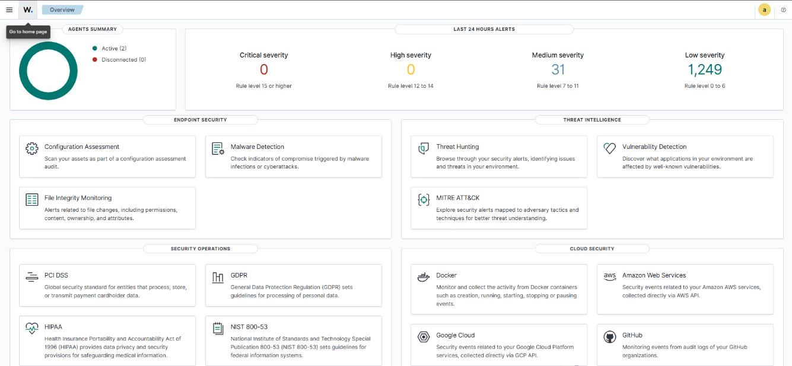
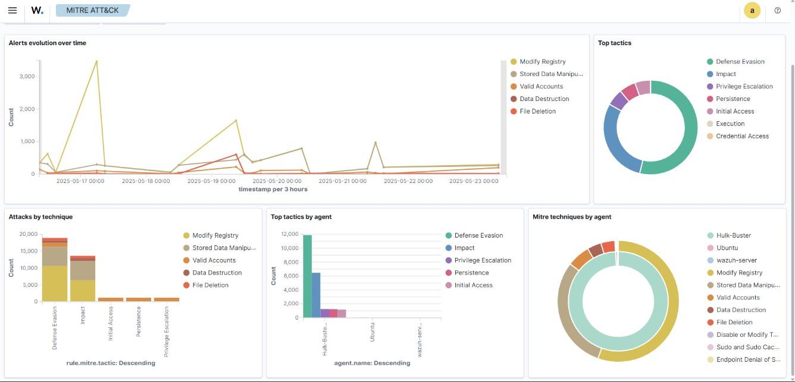
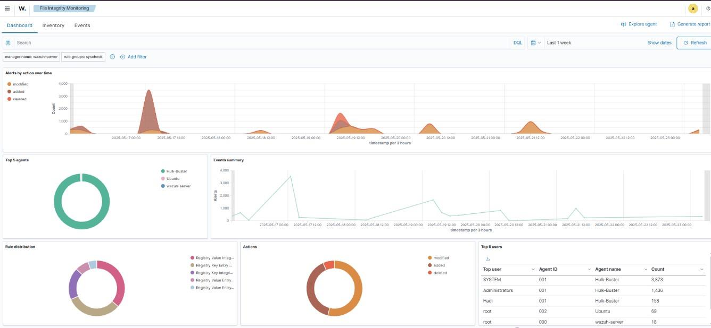
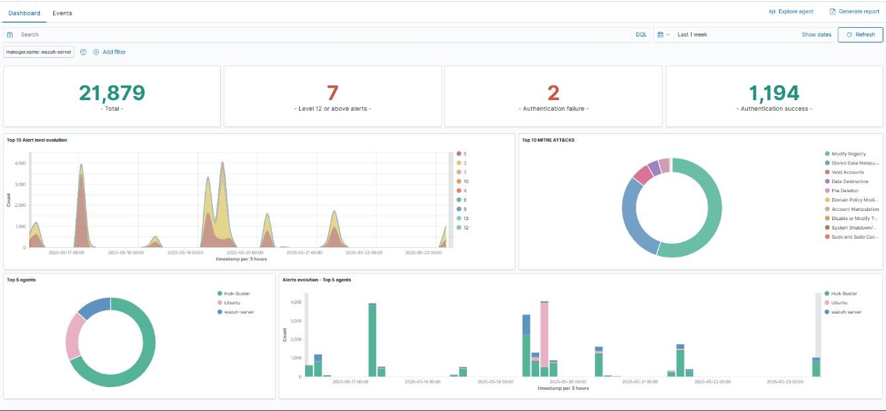
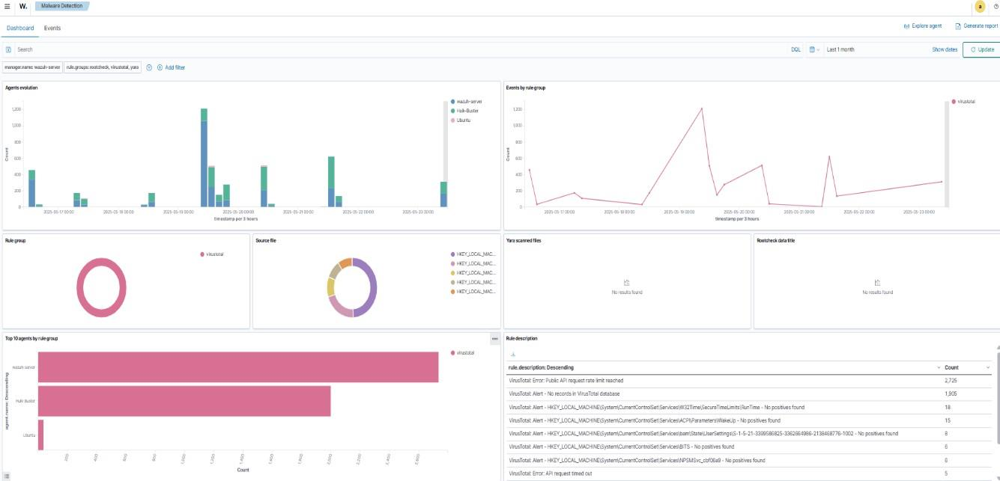
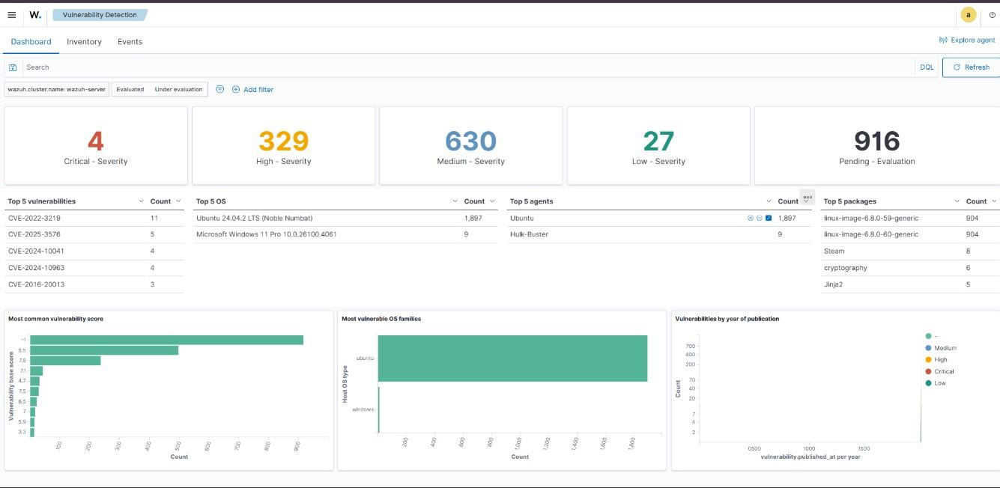

wazuh-security-monitoring-system
A SIEM/EDR lab integrating Wazuh, Suricata, and VirusTotal, with every detection mapped back to MITRE ATT&CK — built end-to-end as a Final Year Project.
01 — Overview
Organizations take an average of 287 days to identify and contain a breach (IBM, 2023) — largely because monitoring tools operate in silos. This project builds a unified, open-source security operations stack on Wazuh that centralizes log analysis and file integrity monitoring across Windows and Linux endpoints, correlates Suricata network alerts into the same dashboard, automates malware triage through VirusTotal, and classifies every finding against MITRE ATT&CK.
Something happened → what, where, how bad, and which technique it maps to. That's the core workflow of a SOC.
02 — Capabilities
Wazuh agents on Windows 11 and Ubuntu, reporting over an encrypted channel to a central manager.
Real-time watch on system and application directories, tuned to cut noisy false positives.
VirusTotal API scans files on change and can auto-remove confirmed threats via active-response.
Suricata plus the Emerging Threats ruleset, alerts ingested straight into the same dashboard.
Custom rules tagged with technique and tactic IDs for structured threat hunting.
Scheduled scans against NVD, CPE, and Microsoft Security Update feeds, filtered by CVSS.
An active-response Bash script quarantines files flagged malicious, with a full audit log.
Postfix-relayed SMTP notifications for alerts above a configurable severity threshold.
03 — Console






04 — Build it yourself
Never touched a SIEM before? That's fine — every step below is written for a first-timer, with a plain-language note on why each command matters, not just what to type. It all runs inside a free virtual machine, so it can't affect your real computer.
Get the full guide as a PDF — same 10 steps, with every command explained line-by-line.
Wazuh ships as a ready-made virtual machine (an OVA file) with everything pre-installed. Import it into VirtualBox: File → Import Appliance.
✓ Before clicking Start, set the VM's Display → Graphics Controller to VMSVGA, or the screen may freeze.
# Default login at the console: User: wazuh-user Password: wazuh # Become admin, then find your IP address (look for "inet"): sudo -i ip a
Write that IP address down — you'll paste it into almost every step below as <manager-ip>.
https://<manager-ip> Username: admin Password: admin (change this immediately)
✓ A "not secure" browser warning is normal for a lab with a self-signed certificate.
REM Run as Administrator, replacing <manager-ip> from Step 2 wazuh-agent-4.12.0-1.msi /q WAZUH_MANAGER="<manager-ip>" NET START Wazuh
An "agent" is a small program that reports back to your server. Check the dashboard's Endpoints page — it should appear as Active.
# Trust Wazuh's package source, then install the agent: curl -s https://packages.wazuh.com/key/GPG-KEY-WAZUH | gpg --no-default-keyring \ --keyring gnupg-ring:/usr/share/keyrings/wazuh.gpg --import echo "deb [signed-by=/usr/share/keyrings/wazuh.gpg] https://packages.wazuh.com/4.x/apt/ stable main" \ | sudo tee -a /etc/apt/sources.list.d/wazuh.list sudo apt-get update WAZUH_MANAGER="<manager-ip>" sudo apt-get install wazuh-agent # Turn it on and set it to start automatically: sudo systemctl enable --now wazuh-agent
Get a free API key at virustotal.com, then add this to the manager's config so new/changed files get checked automatically:
<!-- /var/ossec/etc/ossec.conf on the manager --> <integration> <name>virustotal</name> <api_key>PASTE_YOUR_KEY_HERE</api_key> <rule_id>100200,100201</rule_id> </integration>
sudo add-apt-repository ppa:oisf/suricata-stable sudo apt-get update && sudo apt-get install suricata -y sudo systemctl restart suricata
Then point the agent at Suricata's alert file (/var/log/suricata/eve.json) so it flows into the same dashboard as everything else.
<!-- /var/ossec/etc/ossec.conf on the manager --> <vulnerability-detector> <enabled>yes</enabled> <feed>nvd</feed><feed>cpe</feed><feed>msu</feed> </vulnerability-detector>
Restart the manager and check the Vulnerability Detection tab a few minutes later.
Wazuh can't log into Gmail directly, so a small relay (Postfix) does it for you — using a Gmail app password, never your real one.
sudo apt install postfix mailutils libsasl2-modules # then configure relayhost + smtp_sasl_* in /etc/postfix/main.cf # (full copy-paste version in the PDF guide)
# A harmless, industry-standard test file (not a real virus): curl -Lo /root/eicar.com https://secure.eicar.org/eicar.com
See it show up under Malware Detection in the dashboard — your lab is live end-to-end.
05 — Results
06 — Applications & skills
Proactive detection and response for finance, healthcare, and tech orgs.
Audit-ready logs mapped toward GDPR, HIPAA, and PCI-DSS.
Monitoring and mitigating network-based threats against transactional systems.
A self-contained lab for teaching SOC workflows.